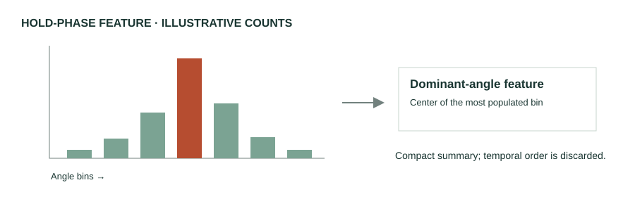

Comparing rules and learned angle features
Comparison: explicit rules versus learned angle features
Pose Trainer applies geometric rules to recorded upper-body exercises. Real-Time Feedback and Benchmark Dataset for Isometric Pose Evaluation summarizes joint angles and trains classifiers for six held poses. Both make posture measurable, but they turn those measurements into decisions differently. [3] [2]
| Question | Pose Trainer | Isometric pose study |
|---|---|---|
| How is an error decided? | Exercise-specific geometric thresholds. | Angle-histogram features classified by a learned model, including an MLP. |
| What is the advantage? | A detected deviation maps directly to a rule and warning. | Classification boundaries can be learned from labeled examples. |
| What constrains it? | Hand-chosen rules, viewpoint, and pose noise. | The training labels, restricted frontal view, and small participant pool. |
One algorithm, explained
The isometric study first finds repetition/hold segments from a landmark-coordinate signal. Peaks must exceed a published prominence of 0.2, with neighboring local minima defining boundaries. Within a segment, it bins each selected joint angle and keeps the center of the most frequent bin. The resulting feature vector goes to a classifier. [2, §4–4.1]
# Simplified outline of the published isometric method
for peak in landmark_signal_peaks:
if prominence(peak) > 0.2:
segment = frames_between_neighboring_minima(peak)
features = []
for joint_angle in selected_angles(segment):
bins = histogram(joint_angle) # directed angles: 0–360°
features.append(center_of_most_frequent_bin(bins))
predicted_error = trained_classifier(features)The 0.2 value depends on the coordinate scaling. Reproducing this method requires specifying the pose output, selected signal and angles, histogram bins, and training procedure. The outline is not runnable application code.

What succeeded?
In the isometric study, angle-model weighted F1 ranges from .796 to .952 across poses. It exceeds the tested graph model for Cobra, Triangle, Warrior-2, and Plank, while the graph model scores higher for Tree and Superman. A simple representation was competitive within that experiment; a more complicated model was not consistently better. [2, Table 3]
Pose Trainer makes individual rules easy to explain. For bicep curls, it uses a 35° upper-arm/torso threshold and checks whether the elbow angle reaches below 70°. These rules illustrate traceable corrections, not universal exercise standards. [3, §4.6]
What falls short?
A histogram preserves common angles but discards their order. That can suit a stable hold, but cannot fully describe when a fault occurred during a dynamic repetition. Fixed rules also depend on the exercise and view. The isometric study's restricted, male-only cohort limits claims about other users. These are method and evaluation limits, not evidence that either approach always fails. [2, §7]
Conclusion: Use simple angle methods as explainable baselines. Use a temporal comparison when the question depends on how the movement changes, as discussed next.